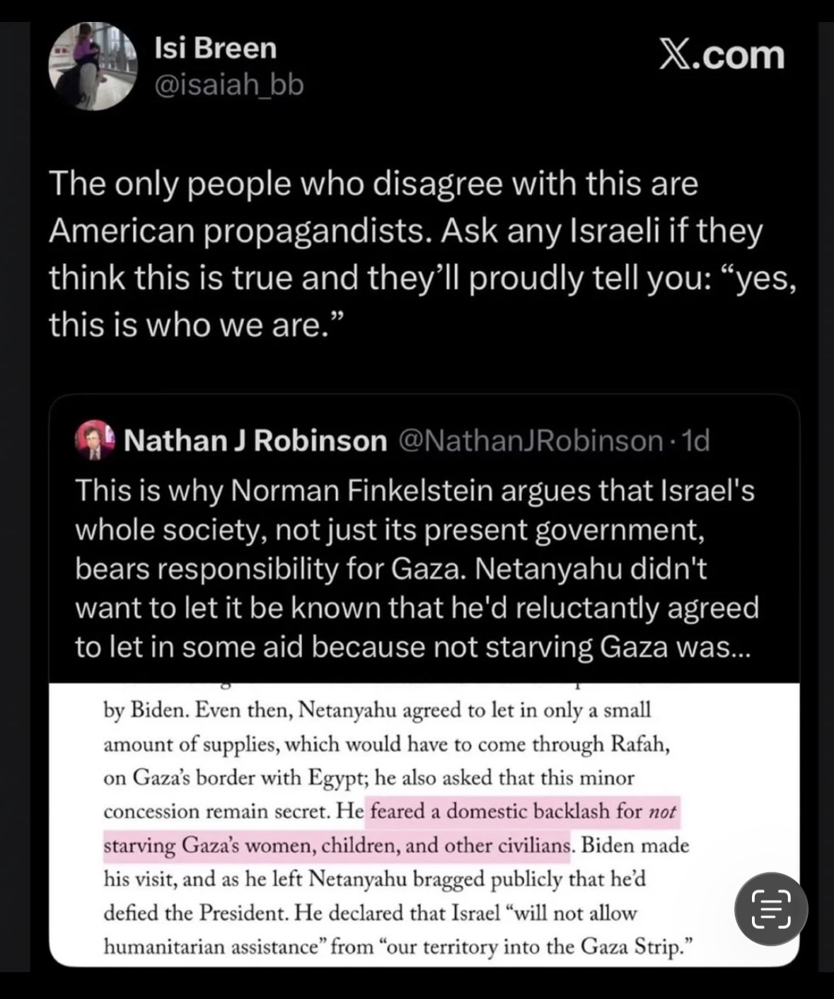

The only people who disagree with this are American propagandists. Ask any Israeli if they think this is true and they'll proudly tell you: "yes, this is who we are."
Claims checked
During President Biden's October 18, 2023 visit to Israel, Netanyahu agreed to let only a small amount of humanitarian aid into Gaza, routed through the Rafah crossing from Egypt.
Well documented. After Oct. 7 Israel sealed Gaza; under US pressure Israel and Egypt agreed on Oct. 18, 2023 to allow an initial batch of roughly 20 aid trucks in via Rafah from Egypt, and Biden announced $100m in US humanitarian assistance. The first convoys crossed on Oct. 21, 2023.
That concession came only after Secretary of State Antony Blinken threatened that Biden would cancel his visit unless Israel let aid in — and Netanyahu asked that the concession be kept secret.
Matches Blinken's own first-person account, given in a New York Times exit interview (January 2025) and widely reported: he threatened to nix the presidential visit unless aid was permitted; Netanyahu then agreed to a small amount of supplies via Rafah and asked that this minor concession remain secret.
Netanyahu publicly declared that Israel "will not allow humanitarian assistance" from "our territory into the Gaza Strip."
Consistent with Israel's stated position in October 2023: aid would transit via Egypt, not Israeli territory, and the Prime Minister's Office said no aid would be allowed in from Israel while hostages were held. Netanyahu publicly framed the arrangement as defiance of Washington rather than as a concession.
Netanyahu "feared a domestic backlash for not starving Gaza's women, children, and other civilians."
States an inner motive as fact. The documented spine — a minimal, secret concession Netanyahu wanted hidden and then publicly disavowed — is supported by Blinken's account. But the specific motive attributed here (that he feared backlash for 'not starving' civilians) is the writer's characterization, not an independently established fact, so it is graded partial.
Interpretation (ungraded)
- That Israel's whole society — not just its present government — bears responsibility for the conduct of the Gaza war (a position the post attributes to Norman Finkelstein).
- That 'the only people who disagree with this are American propagandists,' and that 'any Israeli' would proudly affirm it — the poster's rhetorical framing, not a measurable claim.
What the sources establish
The screenshot stacks three layers: an X post by Isi Breen (@isaiah_bb), a quoted post by writer Nathan J. Robinson invoking Norman Finkelstein, and — highlighted — a passage of reporting about how Gaza aid was handled during President Biden's October 2023 visit to Israel. Stripped of the commentary, the factual spine of that passage checks out.
After Hamas's October 7, 2023 attack, Israel sealed Gaza. According to Secretary of State Antony Blinken's own account, given in a New York Times exit interview in January 2025, he had to threaten that Biden would not make his planned visit unless Israel allowed humanitarian aid in. Netanyahu then agreed to let in only a small amount of supplies, routed through the Rafah crossing on Gaza's border with Egypt, and asked that this concession be kept secret. On October 18, 2023 Israel and Egypt agreed to an initial batch of roughly 20 aid trucks via Rafah, Biden announced $100 million in US assistance, and the first convoys crossed on October 21. Publicly, Netanyahu's government stressed that no aid would pass through Israeli territory while hostages were held — messaging widely read as defiance of Washington rather than cooperation.
Where the passage moves from reporting to inference is its claim about motive — that Netanyahu 'feared a domestic backlash for not starving Gaza's women, children, and other civilians.' The behavior it rests on (a hidden, minimal concession he later disowned in public) is documented; the stated inner motive is the writer's characterization, so it is graded partial. The surrounding framing — Finkelstein's argument that all of Israeli society, not just its government, bears responsibility, and Breen's claim that 'any Israeli' would proudly own it — is opinion and rhetoric, recorded here as interpretation rather than graded as fact.
Sources
- Secondary Times of Israel — Blinken: After Oct. 7, I threatened to nix Biden visit if Israel didn't let aid into Gaza
- Secondary Times of Israel — Israel to allow 'continued flow' of aid into Gaza
- Secondary PBS NewsHour / AP — Despite setbacks, Biden reaches aid breakthrough on Israel trip
- Secondary Axios — Israel to allow entry of humanitarian aid to Gaza from Egypt after US pressure
Share this
An X post amplifies reporting that during Biden's October 2023 visit Netanyahu agreed only to a minimal, secret trickle of Gaza aid — extracted by a US threat to cancel the trip — then publicly cast it as defiance of Washington. The documented facts hold up; the added claim about his inner motive, and the framing that all of Israeli society shares the blame, are interpretation, not established fact.
Checked against primary sources
CALL AND RESPONSE
Checked against primary sources where available. Researched with AI, reviewed by a human editor.